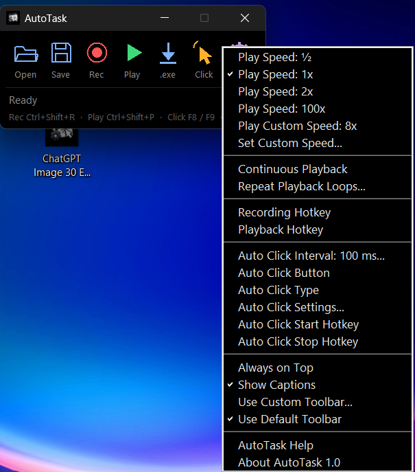

Herkes için Otomasyon
Basit + Hızlı + Güçlü

AutoTask, yaptığınız işlemleri kaydedip istediğiniz kadar tekrar oynatmanızı sağlayan sade bir PC otomasyon uygulamasıdır.
Komut dosyası yazmanız gerekmez. Kayıt tuşuna basın, işlemlerinizi yapın, sonra oynatın.
AutoTask'ı indirin
AutoTask.exe dosyasını indirKüçük arayüz, tam kontrol
Kaydedin ve oynatın
Fare ve klavye işlemlerinizi kaydedin, tek tuşla tekrar oynatın. Kayıtlarınızı dosyaya kaydedip daha sonra yeniden açabilirsiniz.
Oynatma hızı
Yarım hızdan 100 kata kadar hazır hızlar var. İsterseniz kendi hızınızı da girebilirsiniz.
Döngü
Kaydı kesintisiz tekrarlayın ya da kaç kez tekrar edeceğini siz belirleyin.
Otomatik tıklayıcı
Tıklama aralığını milisaniye olarak, fare tuşunu ve tıklama türünü seçin. F8 ile başlatın, F9 ile durdurun.
Kısayol tuşları
Kayıt için Ctrl+Shift+R, oynatma için Ctrl+Shift+P. Kısayolları ayarlardan değiştirebilirsiniz.
Rahat pencere
Pencereyi her zaman üstte tutabilir, araç çubuğunu ve alt yazıları kendinize göre ayarlayabilirsiniz.
Sık sorulan sorular
AutoTask nasıl kullanılır?
Rec düğmesine ya da Ctrl+Shift+R kısayoluna basıp işlemlerinizi yapın, kaydı bitirin. Ardından Play düğmesine ya da Ctrl+Shift+P kısayoluna basarak kaydı oynatın.
Hangi Windows sürümlerinde çalışır?
AutoTask, 64 bit Windows için hazırlanmıştır.
Windows indirirken ya da açarken uyarı verdi, ne yapmalıyım?
Windows SmartScreen, yeni veya dijital olarak imzalanmamış uygulamalarda uyarı gösterebilir. Uygulamayı bu sayfadan indirdiyseniz "Ek bilgi" ve ardından "Yine de çalıştır" seçeneğiyle açabilirsiniz.